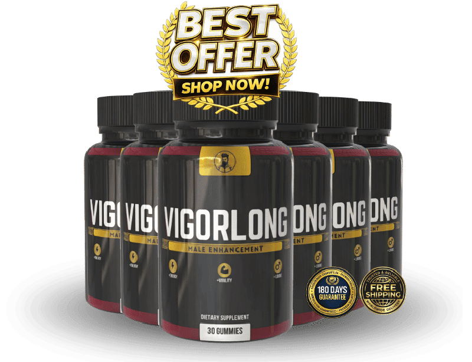

What Is Vigorlong And How Does It Work?
It starts the same way for almost every man. Not with a diagnosis. Not with a crisis. With a quiet realization that something shifted — and it did not shift back.
Less stamina. Less confidence behind closed doors. Less of the drive that used to show up without being summoned. The body still responds. Just not the way it did five years ago. Ten years ago.
The clinical name for what is happening is reproductive inflammation. Chronic, low-grade swelling in tissue that depends on healthy blood flow to function. It builds silently through your thirties and forties, fed by stress hormones, environmental toxins, and the natural slowdown of circulation that comes with age.
Here is the part most men never hear. The machinery is not broken. It is inflamed and undersupplied. The blood vessels that deliver oxygen and nutrients to the tissue responsible for performance are narrower than they should be. The hormonal signals that trigger desire are weaker than they need to be. Two systems failing at the same time — and each one makes the other worse.
Vigorlong is a daily capsule built around that dual problem. Eight plant-based ingredients and natural minerals, targeting both the circulatory pathway and the hormonal cascade that drives male vitality. No synthetic compounds. No prescription required.
The manufacturer describes three stages. Stage one — within the first weeks — restores energy and mental clarity. Stage two brings firmer physical response and improved endurance. Stage three, after roughly ninety days, addresses the underlying inflammation in the reproductive system.
It is manufactured in an FDA-registered, GMP-certified facility in the United States. Pure plant ingredients and natural minerals. One capsule per day. That is the entire protocol.
Vigorlong Ingredients
Eight carefully selected ingredients. Each one targets a specific link in the chain that connects healthy circulation to sustained male performance — nothing here is decorative.
- Hawthorn Berry (Extract): One of the most researched botanicals for cardiovascular support. Hawthorn Berry promotes healthy circulation by relaxing blood vessel walls and supporting nitric oxide availability — the molecule directly responsible for vascular dilation where it matters most.
- Tribulus Terrestris (Extract): Used across traditional systems of medicine for centuries to heighten libido. Clinical research links Tribulus to measurable improvements in sexual desire and satisfaction in men, working through pathways that complement — rather than replace — the body's own hormonal production.
- Chrysin (Extract): A natural flavonoid that acts as an oxidative stress shield. Chrysin protects vascular tissue from the free radical damage that accelerates age-related circulatory decline — the kind of invisible damage that quietly undermines performance over years, not days.
- Epimedium (Extract): Known widely as Horny Goat Weed. Contains icariin, a compound that facilitates blood flow by inhibiting PDE5 — the same pathway targeted by prescription medications, but through a natural mechanism used in Traditional Chinese Medicine for over two thousand years.
- Saw Palmetto (Extract): A clinically studied extract that supports healthy testosterone production by helping regulate the conversion of testosterone to DHT. This dual action preserves the hormonal balance critical to sustained drive and physical performance in men over forty.
- Tongkat Ali (Extract): The most validated natural compound in the world for male sexual performance. Published trials show Tongkat Ali raises free testosterone, reduces cortisol, and measurably improves libido, endurance, and satisfaction — particularly in men who are otherwise healthy but experiencing age-related decline.
- Winged Treebine (Extract): A lesser-known but traditionally valued botanical that enhances natural stamina. Winged Treebine supports sustained physical energy and endurance through adaptogenic pathways — helping the body maintain output under the kind of stress that normally degrades performance.
- Magnesium (Mineral): An essential mineral that over sixty percent of men are deficient in. Magnesium directly supports healthy testosterone levels, muscle function, and nerve signaling. Without adequate magnesium, the other ingredients in this formula cannot reach their full potential — it is the foundation the rest of the stack builds on.
Read together, the formula is systematic: four ingredients on circulation and blood flow, two on hormonal support and drive, one on oxidative protection, and one foundational mineral that ties the entire stack together. Nothing is filler. Nothing is there for the label.
Vigorlong Side Effects
Every ingredient in this formula is something your body already knows how to process.
That is not a marketing line — it is a factual description of the ingredient list. Plant extracts. A naturally occurring flavonoid. An essential mineral your cells use every day. These are nutrients your body recognizes, delivered at supportive amounts designed to restore function, not override it.
The difference matters. Formulas built around synthetic compounds tend to come with a tradeoff list: flushing, headaches, sudden drops in blood pressure, the warning labels most men have already read. Vigorlong does not work that way. It supports what your body already does — just more efficiently than it has been doing on its own.
The manufacturing supports the safety profile. Vigorlong is produced in an FDA-registered, GMP-certified facility in the United States. Gluten-free. BPA-free. Non-GMO. Each batch is tested for purity and consistency before release.
Standard guidance applies: consult your healthcare professional before starting any supplement if you take prescription medication or have an existing medical condition. Not intended for men under eighteen.
Vigorlong Dosage
One capsule. Once a day. No cycling schedule. No complicated timing.
Each bottle contains a 30-day supply. Most men take it with breakfast or their morning coffee — attaching it to an existing habit so it never gets forgotten. Consistency matters more with this formula than timing does.
Here is why. The eight active ingredients build to effective concentrations in your system over time. Skipping days does not slow the result — it largely prevents it. The manufacturer frames the real protocol as 90 to 180 days for the full three-stage process: energy and clarity first, physical response second, deep inflammatory repair third.
That timeline is why the multi-bottle options exist on the official site. They cover a full protocol without monthly reorders, and they reduce the cost per bottle significantly.
Every order is a one-time purchase. No subscription. No automatic billing. No recurring charges of any kind. You order once and that is it.
Do not exceed one capsule daily. Higher doses do not accelerate the process.
Vigorlong – Refund Policy
A 180-day, no-questions-asked money-back guarantee covers every order.
Read that number again. One hundred and eighty days. Six full months.
Now read it against the performance timeline. The manufacturer says first changes appear in the initial weeks. Physical improvement builds through months two and three. The deep inflammatory repair phase runs through month six. The guarantee covers the entire protocol — every stage, every phase, with room to spare.
A company expecting returns does not build a guarantee that runs longer than the product cycle itself. That is a company betting you will want to reorder.
If you are not satisfied for any reason — any reason at all — you contact support and receive a full refund. No bottles to return. No paperwork. No phone tree designed to talk you out of it.
You take zero financial risk. They take all of it.
Full terms are available on the official website.
Vigorlong Customer Reviews
 Robert Harmon
Phoenix, AZ
Verified Purchase – 6 Bottles
Robert Harmon
Phoenix, AZ
Verified Purchase – 6 Bottles
"I am fifty-eight and my doctor told me my testosterone was on the low end of normal — not enough for treatment, but enough to explain what I was feeling. A friend mentioned Vigorlong and I figured the guarantee made it worth trying. Around week six the change was obvious. More energy in the mornings, better focus at work, and in the bedroom my wife noticed before I said anything. I ordered the six-bottle pack on my second round because I have no intention of stopping."
 David Moretti
Chicago, IL
Verified Purchase – 3 Bottles
David Moretti
Chicago, IL
Verified Purchase – 3 Bottles
"I run a restaurant and the stress was wrecking everything — sleep, patience, and definitely my relationship. I started Vigorlong because a capsule was something I could actually stick with. Two months in, the stamina came back first, then the drive. My wife says I seem ten years younger. I have recommended this to three guys on my staff who are dealing with the same thing."
 Dorothy Sullivan
Denver, CO
Verified Purchase – 3 Bottles
Dorothy Sullivan
Denver, CO
Verified Purchase – 3 Bottles
"I bought this for my husband after he turned fifty-five and started making excuses every weekend. He would never have ordered it himself — too proud. He started taking it without much faith. Around week five I noticed it before he admitted anything. More present, more confident, more like the man I fell in love with thirty years ago. He is on his second order now and I am the one reminding him to take it every morning."
Vigorlong – Where To Buy
One mistake costs men their guarantee. It is worth being direct about.
Vigorlong is sold exclusively through the official website. It is not available on Amazon, eBay, Walmart, or any third-party marketplace. Bottles do surface on those platforms from time to time. The packaging looks right. What you cannot verify from a listing is what is actually inside, how it was stored, or whether the active compounds have degraded — and with a formula whose ingredients are dose-sensitive, that is not a small question.
The larger issue is the one nobody considers until it matters. The 180-day money-back guarantee covers orders placed on the official site, and only those. Customer support works from the manufacturer's own records. A third-party purchase is invisible to them — nothing to look up, nothing to verify, nothing to refund.
Ordering direct keeps everything attached: the genuine formula, the manufacturing standards, the guarantee, and access to support if you need it.
To ensure you're getting the authentic product, most users choose to visit the official website directly.
Is Vigorlong A Scam?
No — and the easiest way to tell is by what the product does not promise.
A scam in this category follows a pattern: one generic ingredient, a claim of overnight transformation, and a return policy buried in fine print or missing entirely. Vigorlong does the opposite. Eight ingredients, each with a defined role against a specific biological problem. A timeline that is honest about being slow — weeks to months, not hours. And a 180-day guarantee that covers the entire protocol with room to spare.
It is manufactured in an FDA-registered, GMP-certified facility in the United States. Sold as a one-time purchase with no subscription trap, no hidden charges, no recurring billing.
Now the honest limits. This formula targets three interconnected drivers of male performance decline — circulatory insufficiency, hormonal imbalance, and chronic reproductive inflammation. It will not be right for every man or every situation. If your case calls for medical evaluation, get one. That is always worth more than any supplement.
But if you have been quietly arranging your life around a problem you do not discuss — avoiding situations, declining invitations, telling yourself this is just how things are now — the math is not complicated. A hundred and eighty guaranteed days. If nothing changes, you get every cent back and the only cost was the waiting.

For those who want to verify product details or check current availability, the official Vigorlong website remains the safest and most reliable option.